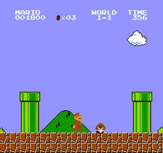

Dans les années 1980, il y a eu une explosion des consoles de jeux vidéo et des jeux eux-mêmes. Des
centaines de
titres ont inondé le marché, dont de nombreux étaient de mauvaise qualité. Cela a créé une offre trop grande
pour une demande qui n'était pas aussi forte qu'attendu.
Beaucoup de jeux étaient rapidement produits et commercialisés sans soins particuliers, ce qui a
entraîné une mauvaise réputation pour les jeux vidéo. Un exemple emblématique est "E.T. the
Extra-Terrestrial" sur Atari 2600, qui est souvent cité comme l'un des pires jeux de l'époque.
Mais Nintendo a introduit une console de qualité supérieure et aussi une politique
stricte de contrôle sur les jeux, en s'assurant que seules les créations de haute qualité étaient autorisées
sur la console. Le jeu qui a véritablement redonné un élan à l’industrie a été "Super Mario Bros.", lancé avec
la NES.

Super Mario Bros. est rapidement devenu un immense succès grâce à sa jouabilité innovante, ses
graphismes colorés et sa musique mémorable. Il a redonné confiance aux consommateurs et aux développeurs,
redéfinissant les standards de la qualité des jeux vidéo. Nintendo a ainsi instauré un contrôle rigoureux
sur les licences de jeux, ce qui a contribué à limiter la production de jeux de mauvaise qualité et à
rétablir la crédibilité de l'industrie.